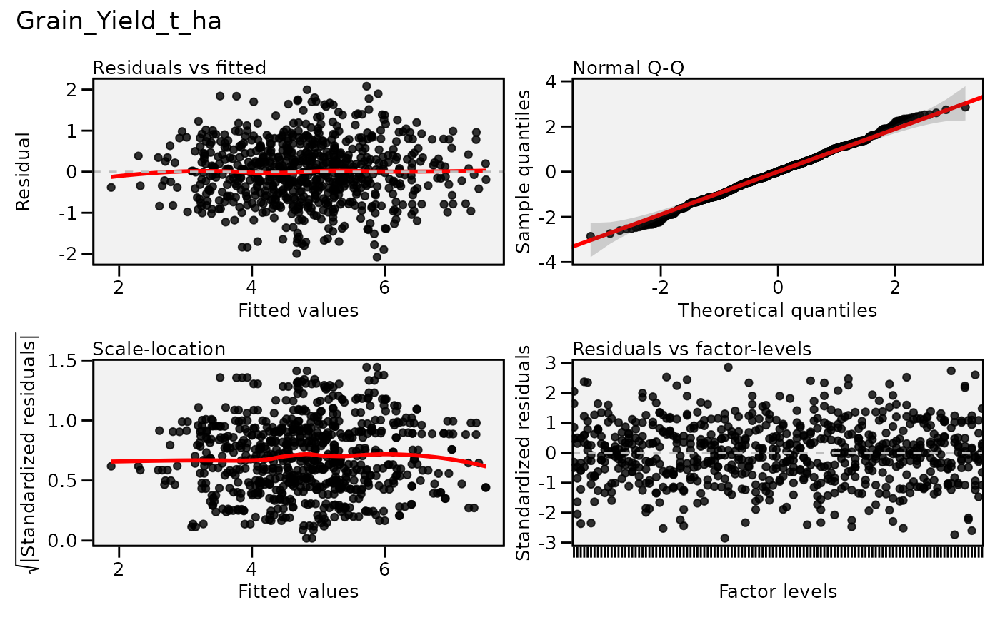
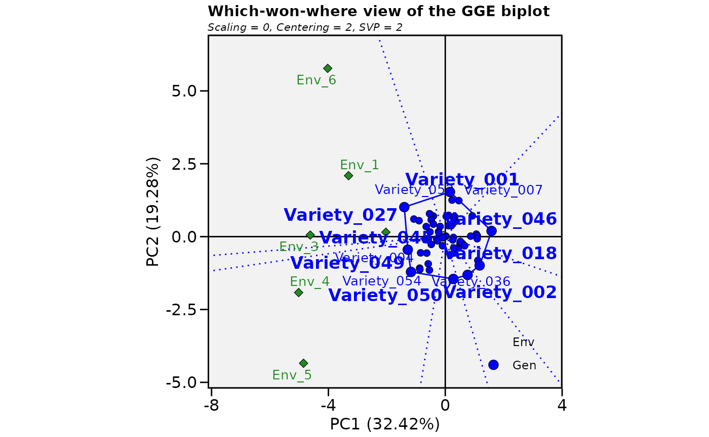

Multi-Environment Trial (MET) Analysis with brapiR2
Source:vignettes/articles/multi-environment-analysis.Rmd
multi-environment-analysis.RmdOverview
Multi-environment trial (MET) analysis is a core workflow of a plant breeding program: gather phenotypic observations from many locations and years, then decompose genotype x environment (GxE) interaction to identify stable, high-performing varieties.
This article has three parts: Part 1 fetches real study, location, and phenotype data from the public BrAPI test server and shows exactly what brapiR2 returns. Part 2 shows the authenticated, parallel-fetch pattern you’d use against your own server, without running it. Part 3 runs the actual GxE analysis — AMMI/GGE biplots (metan) and mixed-model stability (lme4) — on a simulated trial, because Part 1’s real data is nowhere near large enough for either method.
Part 1: Live Data from the Public Test Server
The three calls below return the pieces a multi-environment analysis is assembled from. Studies are the environments themselves: one trial grown at one site in one season. Locations carry the site metadata, latitude, longitude, altitude and so on, that lets you group environments sensibly or relate performance to conditions. Seasons identify the planting cycle, which for maize may be a single year in temperate programs or distinct long and short rains in East Africa.
The distinction between a location and an environment is worth being precise about, because they are routinely conflated. An environment is a location and season combination. The same site in two seasons contributes two environments, and often two quite different ones, since rainfall and temperature in a given year can matter more for yield than the site itself. This is why a study, not a location, is the unit an AMMI or GGE analysis treats as an environment.
library(brapiR2)
library(dplyr)
#>
#> Attaching package: 'dplyr'
#> The following objects are masked from 'package:stats':
#>
#> filter, lag
#> The following objects are masked from 'package:base':
#>
#> intersect, setdiff, setequal, union
studies <- brapi_studies(con)
studies
#> # A tibble: 3 × 29
#> additionalInfo externalReferences active commonCropName contacts
#> <list> <list> <lgl> <chr> <list>
#> 1 <named list [1]> <list [1]> TRUE Tomatillo <list [1]>
#> 2 <named list [1]> <list [1]> TRUE Tomatillo <list [1]>
#> 3 <named list [1]> <list [1]> TRUE Tomatillo <list [1]>
#> # ℹ 24 more variables: culturalPractices <chr>, dataLinks <list>,
#> # documentationURL <chr>, endDate <chr>, environmentParameters <list>,
#> # experimentalDesign <list>, growthFacility <list>, lastUpdate <list>,
#> # license <chr>, locationDbId <chr>, locationName <chr>,
#> # observationLevels <list>, observationUnitsDescription <chr>,
#> # seasons <list>, startDate <chr>, studyCode <chr>, studyDescription <chr>,
#> # studyName <chr>, studyPUI <chr>, studyType <chr>, trialDbId <chr>, …
locations <- brapi_locations(con)
locations
#> # A tibble: 3 × 21
#> additionalInfo externalReferences abbreviation coordinateDescription
#> <list> <list> <chr> <chr>
#> 1 <named list [1]> <list [1]> L2 Outline of the institute bre…
#> 2 <named list [1]> <list [1]> L3 Northwest corner post
#> 3 <named list [1]> <list [1]> L1 Northwest corner of greenhou…
#> # ℹ 17 more variables: coordinateUncertainty <chr>, coordinates <list>,
#> # countryCode <chr>, countryName <chr>, documentationURL <chr>,
#> # environmentType <chr>, exposure <chr>, instituteAddress <chr>,
#> # instituteName <chr>, locationName <chr>, locationType <chr>,
#> # siteStatus <chr>, slope <chr>, topography <chr>, parentLocationDbId <chr>,
#> # parentLocationName <chr>, locationDbId <chr>
seasons <- brapi_seasons(con)
seasons
#> # A tibble: 10 × 3
#> seasonDbId seasonName year
#> <chr> <chr> <int>
#> 1 fall_2011 fall 2011
#> 2 fall_2012 fall 2012
#> 3 fall_2013 fall 2013
#> 4 spring_2012 spring 2012
#> 5 spring_2013 spring 2013
#> 6 summer_2012 summer 2012
#> 7 summer_2013 summer 2013
#> 8 winter_2012 winter 2012
#> 9 winter_2013 winter 2013
#> 10 winter_2014 winter 2014
# brapi_study_data() falls back to an unfiltered fetch + client-side filter
# when a server doesn't honour the studyDbId filter on /observations, so it
# finds data that a direct brapi_observations(con, studyDbId = ...) call
# would miss on this server. It still returns an honest empty tibble (with
# a warning) for studies that genuinely have no observations.
met_raw <- lapply(studies$studyDbId, brapi_study_data, con = con) |>
bind_rows()
#> ! No observations found for study "study2".
#> ! No observations found for study "study3".
met_raw
#> # A tibble: 2 × 6
#> observationUnitDbId observationUnitName germplasmDbId germplasmName studyDbId
#> <chr> <chr> <chr> <chr> <chr>
#> 1 observation_unit1 Plot 1 germplasm1 Tomatillo Fan… study1
#> 2 observation_unit2 Plot 2 germplasm2 Tomatillo Fan… study1
#> # ℹ 1 more variable: `Corn Stalk Height` <list>Only one of these three studies (study1) actually has
recorded observations on the public server today - two germplasm, one
trait, as the survey at dev/explore-test-server.R
found. The other two studies come back empty. AMMI and GGE
decompositions need many genotypes scored across several environments to
estimate genotype, environment, and interaction effects separately; a
mixed model with a germplasmName:env random term needs
enough genotype-by-environment cells to avoid the fit being singular.
Neither is possible with this data, so Part 3 below simulates a
properly-sized trial instead.
Part 2: Authenticated, Parallel Access to Your Own Server (illustrative)
Production BrAPI servers require credentials the public test server
doesn’t need, and brapi_fetch_parallel() is most useful
across many studies at once — this shows that pattern without running it
here.
con_priv <- brapi_connection("https://my-breedbase.org")
con_priv <- brapi_login(con_priv, "username", "password")
# Cache responses to speed up re-runs and protect server bandwidth
con_priv <- brapi_cache_enable(con_priv, ttl = 7200)
# Discover all studies in the target trial
trials_priv <- brapi_trials(con_priv, programDbId = "wheat_program_01")
trials_priv
# Focus on the current MET
studies_priv <- brapi_studies(con_priv, trialDbId = "trial_2022")
studies_priv
study_ids_priv <- studies_priv$studyDbIdbrapi_fetch_parallel() uses the furrr
package to run one worker per study concurrently, against whatever
future plan is already active. It does not set a backend
itself - per the future package’s best-practices vignette, that choice
belongs to the caller, not to the package, so you set the plan yourself
before calling it:
library(future)
future::plan(future::multisession, workers = 2)
met_priv <- brapi_fetch_parallel(con_priv, brapi_study_data, study_ids_priv)
glimpse(met_priv)
future::plan(future::sequential) # shut the workers back down when donePart 3: GxE Analysis on a Simulated Trial
The design below is a 60 genotype by 6 environment trial with 2 replicates, giving 720 plots. That is a realistic size for a regional maize yield trial at the advanced testing stage, and it is roughly the smallest design from which AMMI and GGE can estimate interaction patterns with any confidence.
The relative sizes of the variance components are chosen to match how yield data actually behaves rather than to make the analysis look tidy. The environment effect is the largest of the three systematic terms (environment, genotype, and genotype-by-environment), consistent with site to site variation typically being the largest systematic source of variation in a multi-environment trial - larger than the spread between varieties within a site, though not so dominant that it drowns out the genotype and genotype-by-environment signal this analysis exists to recover. The genotype by environment variance is set larger than the genotype variance, which is the usual finding in maize METs and is precisely why this analysis exists at all. If varieties ranked the same way everywhere, one trial would answer the question and there would be nothing to decompose. The residual is larger still, reflecting plot to plot variation from soil heterogeneity, stand establishment and measurement error, which is why replication is not optional.
library(dplyr)
library(tidyr)
set.seed(123)
n_gen <- 60L
n_env <- 6L
n_rep <- 2L
genotypes <- sprintf("Variety_%03d", seq_len(n_gen))
environments <- sprintf("Env_%d", seq_len(n_env))
overall_mean <- 5 # tonnes per hectare
# SIMULATED variance components. Real yield heritabilities are usually
# around 0.3-0.6; sd_g/sd_ge/sd_e below are chosen to land broad-sense H2
# near 0.5, not near 1 (see Part 3's mixed model below for the fitted value).
sd_g <- 0.35
sd_ge <- 0.55
sd_e <- 1.00
gen_effect <- setNames(rnorm(n_gen, sd = sd_g), genotypes)
env_effect <- setNames(rnorm(n_env, sd = 0.60), environments)
ge_effect <- outer(genotypes, environments, function(g, e) {
rnorm(length(g), sd = sd_ge)
})
dimnames(ge_effect) <- list(genotypes, environments)
met <- expand_grid(
germplasmName = genotypes,
env = environments,
rep = seq_len(n_rep)
) |>
mutate(
observationUnitDbId = sprintf("plot_%04d", row_number()),
Grain_Yield_t_ha = overall_mean +
gen_effect[germplasmName] +
env_effect[env] +
ge_effect[cbind(germplasmName, env)] +
rnorm(n(), sd = sd_e) # SIMULATED residual (plot-to-plot) noise
)
nrow(met)
#> [1] 720
head(met)
#> # A tibble: 6 × 5
#> germplasmName env rep observationUnitDbId Grain_Yield_t_ha
#> <chr> <chr> <int> <chr> <dbl>
#> 1 Variety_001 Env_1 1 plot_0001 7.68
#> 2 Variety_001 Env_1 2 plot_0002 5.29
#> 3 Variety_001 Env_2 1 plot_0003 6.27
#> 4 Variety_001 Env_2 2 plot_0004 3.19
#> 5 Variety_001 Env_3 1 plot_0005 5.02
#> 6 Variety_001 Env_3 2 plot_0006 5.59Means Matrix for GxE Analysis
Many GxE methods (AMMI, GGE biplot) require a two-way table of genotype means per environment.
# Compute adjusted means (plot-level mean per genotype x environment)
means <- met |>
group_by(germplasmName, env) |>
summarise(yield = mean(Grain_Yield_t_ha, na.rm = TRUE), .groups = "drop")
# Wide format: rows = genotypes, columns = environments
means_wide <- means |>
pivot_wider(names_from = env, values_from = yield)
means_wide
#> # A tibble: 60 × 7
#> germplasmName Env_1 Env_2 Env_3 Env_4 Env_5 Env_6
#> <chr> <dbl> <dbl> <dbl> <dbl> <dbl> <dbl>
#> 1 Variety_001 6.48 4.73 5.31 3.78 2.52 6.09
#> 2 Variety_002 4.68 4.27 5.00 3.32 5.05 2.74
#> 3 Variety_003 7.52 5.29 4.89 4.88 5.55 6.46
#> 4 Variety_004 6.44 4.74 5.78 5.28 6.35 4.17
#> 5 Variety_005 4.97 6.23 5.04 4.39 5.84 7.30
#> 6 Variety_006 4.73 6.17 5.87 4.78 4.26 5.05
#> 7 Variety_007 6.40 4.08 5.90 3.56 2.09 5.12
#> 8 Variety_008 4.45 4.57 3.19 4.08 2.97 5.62
#> 9 Variety_009 4.12 4.16 4.53 4.95 3.97 4.58
#> 10 Variety_010 7.01 5.93 5.34 3.81 4.34 5.57
#> # ℹ 50 more rowsAMMI and GGE Biplot with metan
Both methods start from the same observation: the two-way table of genotype by environment means contains a pattern that main effects alone cannot describe. They differ in what they do about it.
AMMI removes the additive part first, fitting genotype and environment main effects by analysis of variance, then applies principal components to what remains, which is the interaction. The first interaction principal component, IPCA1, captures the dominant pattern in how varieties respond differently across sites. In the AMMI1 biplot below, the horizontal axis is mean yield and the vertical axis is the IPCA1 score. A genotype plotted near zero on the vertical axis performs consistently relative to the others across environments; one plotted far from zero has yield that depends strongly on where it is grown. The point far to the right on mean yield and close to the horizontal axis, high mean and near zero interaction, is the broadly adapted variety.
GGE keeps the genotype main effect together with the interaction and discards the environment main effect. The reasoning is that the environment effect, however large, is useless for choosing a variety: knowing that one site yields more than another tells you nothing about which line to release. What matters for selection is genotype and its interaction, hence G plus GE. The which-won-where view draws a polygon through the most extreme genotypes and divides it into sectors with perpendicular rays. The genotype at the vertex of each sector is the best performer for the environments falling in it. When all environments land in a single sector, one variety wins everywhere and the target region behaves as a single mega-environment. When they split across sectors, the region does not, and that is an argument for breeding for specific adaptation rather than for a single broadly adapted release.
library(metan)
#> |=========================================================|
#> | Multi-Environment Trial Analysis (metan) v1.19.0 |
#> | Author: Tiago Olivoto |
#> | Type 'citation('metan')' to know how to cite metan |
#> | Type 'vignette('metan_start')' for a short tutorial |
#> | Visit 'https://bit.ly/metanpkg' for a complete tutorial |
#> |=========================================================|
#>
#> Attaching package: 'metan'
#> The following object is masked from 'package:tidyr':
#>
#> replace_na
#> The following object is masked from 'package:dplyr':
#>
#> recode_factor
# AMMI model: decompose GxE with additive main effects + multiplicative
# interaction
ammi_model <- performs_ammi(
.data = met,
env = env,
gen = germplasmName,
rep = rep, # replicate number, not the plot ID
resp = Grain_Yield_t_ha,
verbose = FALSE
)
#> Warning: There was 1 warning in `summarise()`.
#> ℹ In argument: `across(where(is.numeric), mean, na.rm = na.rm)`.
#> ℹ In group 1: `GEN = Variety_001`, `ENV = Env_1`.
#> Caused by warning:
#> ! The `...` argument of `across()` is deprecated as of dplyr 1.1.0.
#> Supply arguments directly to `.fns` through an anonymous function instead.
#>
#> # Previously
#> across(a:b, mean, na.rm = TRUE)
#>
#> # Now
#> across(a:b, \(x) mean(x, na.rm = TRUE))
#> ℹ The deprecated feature was likely used in the metan package.
#> Please report the issue at <https://github.com/nepem-ufsc/metan/issues>.
# AMMI stability value (ASV) - lower = more stable across environments
ammi_stable <- ammi_indexes(ammi_model)
ammi_stable$Grain_Yield_t_ha |>
arrange(ASV) |>
head(10)
#> # A tibble: 10 × 42
#> GEN Y Y_R ASTAB ASTAB_R ssiASTAB ASI ASI_R ASI_SSI ASV ASV_R
#> <chr> <dbl> <dbl> <dbl> <dbl> <dbl> <dbl> <dbl> <dbl> <dbl> <dbl>
#> 1 Varie… 5.21 18 0.00295 1 19 0.0150 1 19 0.0591 1
#> 2 Varie… 4.63 40 0.00879 2 42 0.0237 2 42 0.0937 2
#> 3 Varie… 5.10 22 0.0110 3 25 0.0285 3 25 0.113 3
#> 4 Varie… 4.39 50 0.0145 5 55 0.0325 4 54 0.128 4
#> 5 Varie… 3.93 58 0.0143 4 62 0.0336 5 63 0.133 5
#> 6 Varie… 4.02 57 0.0157 6 63 0.0343 6 63 0.135 6
#> 7 Varie… 4.14 54 0.0361 7 61 0.0492 7 61 0.194 7
#> 8 Varie… 4.94 26 0.0450 8 34 0.0538 8 34 0.213 8
#> 9 Varie… 5.14 20 0.0470 12 32 0.0551 9 29 0.218 9
#> 10 Varie… 4.86 28 0.0451 10 38 0.0576 10 38 0.227 10
#> # ℹ 31 more variables: ASV_SSI <dbl>, AVAMGE <dbl>, AVAMGE_R <dbl>,
#> # AVAMGE_SSI <dbl>, DA <dbl>, DA_R <dbl>, DA_SSI <dbl>, DZ <dbl>, DZ_R <dbl>,
#> # DZ_SSI <dbl>, EV <dbl>, EV_R <dbl>, EV_SSI <dbl>, FA <dbl>, FA_R <dbl>,
#> # FA_SSI <dbl>, MASI <dbl>, MASI_R <dbl>, MASI_SSI <dbl>, MASV <dbl>,
#> # MASV_R <dbl>, MASV_SSI <dbl>, SIPC <dbl>, SIPC_R <dbl>, SIPC_SSI <dbl>,
#> # ZA <dbl>, ZA_R <dbl>, ZA_SSI <dbl>, WAAS <dbl>, WAAS_R <dbl>,
#> # WAAS_SSI <dbl>
# AMMI1 biplot: IPCA1 scores vs mean yield
plot(ammi_model, type = "AMMI1")
#> Warning: The `size` argument of `element_rect()` is deprecated as of ggplot2 3.4.0.
#> ℹ Please use the `linewidth` argument instead.
#> ℹ The deprecated feature was likely used in the metan package.
#> Please report the issue at <https://github.com/nepem-ufsc/metan/issues>.
#> This warning is displayed once per session.
#> Call `lifecycle::last_lifecycle_warnings()` to see where this warning was
#> generated.
#> Warning: Using `size` aesthetic for lines was deprecated in ggplot2 3.4.0.
#> ℹ Please use `linewidth` instead.
#> ℹ The deprecated feature was likely used in the metan package.
#> Please report the issue at <https://github.com/nepem-ufsc/metan/issues>.
#> This warning is displayed once per session.
#> Call `lifecycle::last_lifecycle_warnings()` to see where this warning was
#> generated.
#> Warning: `aes_()` was deprecated in ggplot2 3.0.0.
#> ℹ Please use tidy evaluation idioms with `aes()`
#> ℹ The deprecated feature was likely used in the metan package.
#> Please report the issue at <https://github.com/nepem-ufsc/metan/issues>.
#> This warning is displayed once per session.
#> Call `lifecycle::last_lifecycle_warnings()` to see where this warning was
#> generated.
# GGE biplot
gge_model <- gge(
.data = met,
env = env,
gen = germplasmName,
rep = rep,
resp = Grain_Yield_t_ha
)
plot(gge_model, type = 3) # "which-won-where" view
Mixed Model Stability with lme4
For unbalanced data or when you need BLUPs rather than means, fit a mixed model with genotype x environment interaction as a random effect.
library(lme4)
#> Loading required package: Matrix
#>
#> Attaching package: 'Matrix'
#> The following objects are masked from 'package:tidyr':
#>
#> expand, pack, unpack
# Basic mixed model: GxE interaction as random
fm <- lmer(
Grain_Yield_t_ha ~ env + (1 | germplasmName) + (1 | germplasmName:env),
data = met
)
summary(fm)
#> Linear mixed model fit by REML ['lmerMod']
#> Formula: Grain_Yield_t_ha ~ env + (1 | germplasmName) + (1 | germplasmName:env)
#> Data: met
#>
#> REML criterion at convergence: 2264.3
#>
#> Scaled residuals:
#> Min 1Q Median 3Q Max
#> -2.70727 -0.62082 -0.00321 0.56782 2.61456
#>
#> Random effects:
#> Groups Name Variance Std.Dev.
#> germplasmName:env (Intercept) 0.1912 0.4373
#> germplasmName (Intercept) 0.1530 0.3912
#> Residual 1.0784 1.0385
#> Number of obs: 720, groups: germplasmName:env, 360; germplasmName, 60
#>
#> Fixed effects:
#> Estimate Std. Error t value
#> (Intercept) 5.2908 0.1213 43.602
#> envEnv_2 -0.5028 0.1560 -3.222
#> envEnv_3 -0.3586 0.1560 -2.298
#> envEnv_4 -0.7491 0.1560 -4.801
#> envEnv_5 -0.9046 0.1560 -5.797
#> envEnv_6 -0.2218 0.1560 -1.421
#>
#> Correlation of Fixed Effects:
#> (Intr) envE_2 envE_3 envE_4 envE_5
#> envEnv_2 -0.643
#> envEnv_3 -0.643 0.500
#> envEnv_4 -0.643 0.500 0.500
#> envEnv_5 -0.643 0.500 0.500 0.500
#> envEnv_6 -0.643 0.500 0.500 0.500 0.500
# Extract BLUPs for genotypic effects
blups <- ranef(fm)$germplasmName
blups <- tibble(
germplasmName = rownames(blups),
BLUP = blups[["(Intercept)"]]
) |>
arrange(desc(BLUP))
head(blups, 10)
#> # A tibble: 10 × 2
#> germplasmName BLUP
#> <chr> <dbl>
#> 1 Variety_027 0.667
#> 2 Variety_003 0.518
#> 3 Variety_045 0.503
#> 4 Variety_005 0.443
#> 5 Variety_049 0.398
#> 6 Variety_038 0.382
#> 7 Variety_004 0.349
#> 8 Variety_054 0.315
#> 9 Variety_037 0.284
#> 10 Variety_010 0.277
# Variance component partitioning
VarCorr(fm)
#> Groups Name Std.Dev.
#> germplasmName:env (Intercept) 0.43730
#> germplasmName (Intercept) 0.39119
#> Residual 1.03845
# H^2 broad-sense heritability (across-environment), from the FITTED
# variance components (not the true simulated ones above - estimation noise
# means these won't match exactly).
var_g <- as.numeric(VarCorr(fm)$germplasmName)
var_ge <- as.numeric(VarCorr(fm)$`germplasmName:env`)
var_e <- sigma(fm)^2
n_env_obs <- length(unique(met$env))
H2 <- var_g / (var_g + var_ge / n_env_obs + var_e / (n_env_obs * n_rep))
cat(sprintf("Broad-sense H^2 (across environments): %.3f\n", H2))
#> Broad-sense H^2 (across environments): 0.557With sd_g = 0.35, sd_ge = 0.55,
sd_e = 1.00 the true (simulated) H2 is about 0.48; the
model fitted above typically recovers something in the same
neighbourhood, comfortably inside the ~0.3-0.6 range real yield
heritabilities fall in — not the unrealistically high value (0.9) that
an earlier, less careful choice of variance components produced.
Final Selection List
The weights below, 0.6 on yield and 0.4 on stability, are a choice rather than a standard, and they should reflect what your program is actually selecting for.
The tradeoff behind them is real. The highest yielding line is frequently not the most stable: it wins substantially at favourable sites and falls away under stress, which shows up as a high mean with a large ASV. A stable line yields moderately more or less everywhere. Which of the two a breeder should prefer depends on the target population of environments and on who is growing the crop. For maize under irrigation with reliable inputs, where the conditions the variety will meet are close to the favourable end of the trials, weighting yield heavily is defensible. For smallholder production under variable rainfall, where a failed season carries consequences a good season does not offset, stability deserves more weight than yield, and a 0.4/0.6 split in the other direction would be the more sensible starting point.
One limitation worth noting: both components are rank-normalised before combining, which makes them comparable but discards magnitude. A line marginally ahead on yield and one far ahead contribute the same rank difference. If the size of the yield advantage matters to the decision, scale the components rather than ranking them.
# Combine BLUP ranking with stability
stability <- ammi_stable$Grain_Yield_t_ha |>
select(GEN, mean_yield = Y, ASV) |>
rename(germplasmName = GEN)
selection <- blups |>
left_join(stability, by = "germplasmName") |>
mutate(
# Normalise both metrics (0 = worst, 1 = best)
rank_yield = rank(BLUP) / n(),
rank_stab = 1 - rank(ASV) / n(), # lower ASV = more stable = better
score = 0.6 * rank_yield + 0.4 * rank_stab
) |>
arrange(desc(score))
# Top 10 selections: high yield + high stability
head(selection, 10)
#> # A tibble: 10 × 7
#> germplasmName BLUP mean_yield ASV rank_yield rank_stab score
#> <chr> <dbl> <dbl> <dbl> <dbl> <dbl> <dbl>
#> 1 Variety_003 0.518 5.77 0.285 0.983 0.733 0.883
#> 2 Variety_005 0.443 5.63 0.268 0.95 0.767 0.877
#> 3 Variety_032 0.210 5.21 0.0591 0.717 0.983 0.823
#> 4 Variety_051 0.237 5.26 0.236 0.783 0.8 0.79
#> 5 Variety_013 0.145 5.10 0.113 0.65 0.95 0.77
#> 6 Variety_044 0.239 5.26 0.312 0.8 0.7 0.76
#> 7 Variety_006 0.172 5.14 0.218 0.683 0.85 0.75
#> 8 Variety_038 0.382 5.52 0.438 0.917 0.433 0.723
#> 9 Variety_027 0.667 6.03 0.668 1 0.267 0.707
#> 10 Variety_035 0.0600 4.94 0.213 0.583 0.867 0.697As with the genomic selection article, the numbers in Part 3 describe a simulated trial and are only meant to demonstrate that the pipeline (fetch -> reshape -> AMMI/GGE -> mixed model -> selection) runs end to end; they say nothing about any real breeding program.
References
- Selby, P., Abbeloos, R., Backlund, J.E., et al., & The BrAPI Consortium (2019). BrAPI — an application programming interface for plant breeding applications. Bioinformatics, 35(20), 4147–4155. https://doi.org/10.1093/bioinformatics/btz190
- Zobel, R.W., Wright, M.J., & Gauch, H.G. (1988). Statistical analysis of a yield trial. Agronomy Journal, 80(3), 388–393. https://doi.org/10.2134/agronj1988.00021962008000030002x
- Yan, W., Hunt, L.A., Sheng, Q., & Szlavnics, Z. (2000). Cultivar evaluation and mega-environment investigation based on the GGE biplot. Crop Science, 40(3), 597–605. https://doi.org/10.2135/cropsci2000.403597x
- Olivoto, T., & Lúcio, A.D. (2020). metan: An R package for multi-environment trial analysis. Methods in Ecology and Evolution, 11(6), 783–789. https://doi.org/10.1111/2041-210X.13384
- Bates, D., Mächler, M., Bolker, B., & Walker, S. (2015). Fitting linear mixed-effects models using lme4. Journal of Statistical Software, 67(1), 1–48. https://doi.org/10.18637/jss.v067.i01